任务
“An 操作 is a 合集 of missions. 完成 all missions to succeed with an 操作 and gain bonus 奖励. Failing one 任务 will fail the rest of the 操作.
— 超级地球 任务 控制
In 绝地潜兵 2，一款 绝地潜兵 is deployed to Operations where they 完成 Missions and Tactical 目标 issued by 超级地球.
行星 Campaign Status
Only planets that are under a 解放 campaign or an 入侵战役 will be 主题 to 操作 Modifiers, whereas planets under 防御 campaigns are completely absent of any 操作 Modifiers.
解放 Campaign
“敌军让该地区陷入战火之中。唯有将其击败才能恢复和平。
— 操作 描述 of a 维和行动
“多个 opportunities to disrupt the enemy's opaque and sinister machinations have been identified in this region. 光能者 forces are highly concentrated here; expect significant 抗性.
Disrupt their schemes and restore peace to this area.— 操作 描述 of a 挫败光能者 操作
“This city is under enemy 控制, it must be reclaimed in the name of Freedom.
— 操作 描述 of a 城市行动 under enemy 控制
“Megafactories like these double as strategic 指挥 nodes and industrial cores for large-scale Cyborg and 机器人 生产.
Storm its walls and reduce this socialist hub to rubble.— 操作 描述 of a 超大型工厂行动
“该区域敌方防线坚挺，在部分任务中，超级驱逐舰无法长时间部署。请做好无法获得超级驱逐舰支援的准备。
— 操作 描述 of a 突击兵行动
保卫战役
“The 终结族 swarm has descended on this 行星 and threatens to infest it.
We must repel this vile incursion before it is too late!— 操作 描述 of a 保卫星球 操作 against the
终结族
“An 机器人 入侵 fleet is attacking this 行星.
We must repel the invading forces before it is too late!— 操作 描述 of a 保卫星球 操作 against the
机器人
“The 光能者 are attempting to steal this 行星 from our citizens.
We must repel them before it is too late!— 操作 描述 of a 保卫星球 操作 against the
光能者
“这座城市遇袭。绝不能让它落入压迫者之手。
— 操作 描述 of a 城市行动 under enemy 攻击
首要战役
“The 终结族控制系统 is 完成. All across the 行星, Termicide Dispersion Towers await activation. This 行星 won't be completely immunised from the 终结族 until every single Tower is activated.
— 操作 描述 of an 启动终结族遏制体系 操作
“尽管灭虫终结剂消灭了大部分终结族，但是仍有一部分幸存了下来，并且适应了灭虫终结剂。现在，它们甚至有可能进一步进化，占领整颗星球。必须尽快关闭这颗星球上的每一座灭虫终结剂喷洒塔。
— 操作 描述 of a 关闭终结族遏制体系 操作
“We must seize this opportunity to 摧毁 the 终结族 Supercolony. 绝地潜兵 across the 行星 will deploy with a 有限 supply of the exotic matter known as Dark Fluid, and insert it at 致命 points in the 行星's crust.
Once 致命 质量 is reached, the 行星 will 折叠 into a black hole, destroying the 威胁 to Liberty once and for all.— 操作 描述 of a 部署暗液体 操作 on Meridia
“The Gloom may hold the key to stopping the 光能者 from moving the Meridian Singularity. A scientific 远征 is being conducted to this 行星, at 极难 费用 and risk. The 绝地潜兵 must secure every scrap of useful data on the Gloom.
— 行星 描述 during a “阴霾”研究考察
“This 行星 is so thoroughly infested that it appears to be a single interconnected 终结族 hive. Gloom spores originate from somewhere inside this 行星.
It is 困难 to 预测 what threats will be encountered on this 行星. The 绝地潜兵 must delve into the enemy's caves to expunge their secrets. Reclaim the 虫窝世界 and free our citizens from the terror of the Gloom.— 操作 描述 of a 解放虫窝世界 操作
“We have discovered extensive 机器人 mining and processing operations on this previously uninhabited 行星. This lava-covered world is rich in mineral resources, but constant eruptions and a noxious 大气层 makes it unsuitable for human habitation.
The 机器人 are recklessly exploiting the 自然 riches of this 行星, stealing them from our citizens and transforming them into tools of Socialist 压迫. We must stop them, annex their industry, and seize their stolen goods.— 操作 描述 of a Disrupt Socialist Industries 操作
“Intel indicates a 庞大 and covert 机器人 industrial undertaking, which the enemy has taken 极难 measures to keep hidden. Further intel is located on the ground at this 位置. Low orbit interdiction 武器库 makes prolonged 驱逐舰 deployment 不可能. Once deployed, you're on your own.
This 操作 is 极其 危险. But it is imperative we 识别 the nature and locations of the 机器人 scheme.— 行星 描述 of 机器人 数据中心 planets
“With the arrival of Freedom to this newfound world, the bugs have been driven into a fascist frenzy. Their 破坏性 urge is denying our citizens the prosperous future they were always meant to inherit on this soil.
A new 世代 of TCS+ towers stands ready to neutralize this 威胁 and ensure total 行星 safety through controlled fumigation. See that they are activated and fully operational.— 操作 描述 of a 启动TCS+ 操作
“It is only a matter of time before this 行星 grants us safe passage into the Void. The 光能者 have deployed a 庞大 fleet to drive our forces back and prevent the completion of this monumental breakthrough.
Put an end to their interference. Hold this 行星 at all costs.— 操作 描述 of a 城市行动 on a 行星 with a Warp Relay 车站
入侵战役
“光能者准备入侵我们忠诚、繁荣、和平的拓殖地，企图将我们的公民变为无票者那样的怪物，然后创造奇怪的能量场，以满足它们非民主的不明目的。必须阻止它们。
— 操作 描述 of a 抵御入侵 操作
“The 光能者 are spreading across this 行星, seizing our colonies and citizens. They must be expunged.
— Old 行星 描述 under 光能者入侵
“光能者正在该星球上生成暗物质，并用此物质将默里迪恩奇点移至超级地球。必须不惜一切代价阻止它们。
— 行星 描述 under 光能者入侵
侦察战役
“超级地球不会解放侦察战役中的星球，但只要该分区坚持反抗，这些星球就仍有希望。
— 行星 描述 with an active 侦察战役
Cyberstan Megafactories
“Cyberstan, once again, forms the axis of the Cyborg Legion's insurrection. 庞大 Megafactories cover its 浮出地面, churning out 机械 armies and 武器 of 质量 extinction.
The Ministry of Defence has ordered the unconditional 摧毁 of Cyberstan. Descend upon their Megafactories and put a permanent end to the Cyborg 威胁.— 操作 描述 of a 超大型工厂行动 on Cyberstan
Urgent 解放 Campaign
“庞大 uncanny storms have erupted on this 行星. These "Exostorms" emanate from otherworldly spires, unearthed by the 光能者 from the ruins of their fallen empire.
The intentions of the 光能者 are unclear, but undeniably sinister. Strike their crude bases and return them to rubble.— 操作 描述 of a 平息异界风暴 操作
“光能者 Exospires are channeling an aberrant Exostorm that rages on the 浮出地面 of this world. The 行星 is at risk of being consumed by the Void, unless we act now.
Lay waste to their abyssal sanctums. Not a single Exospire can remain if Freedom's 轻型 is to prevail.— 操作 描述 of an 抵御寂域 操作
主要目标
Also known as Primary 目标. 任务 目标 can be completed at various 难度.
The 任务 目标 that can be completed on any 星球 无论 which enemy occupies the 行星. 主要目标 completions are rewarded with 申购点 和  100 经验值. This is before any 难度 multipliers are applied. Successful 撤离 is not 必需 to gain the reward at the end of the 任务.
100 经验值. This is before any 难度 multipliers are applied. Successful 撤离 is not 必需 to gain the reward at the end of the 任务.
| Icon | Name | 难度 |
|---|---|---|
| 启动燃料泵 | ||
 |
Upload Escape Pod Data | |
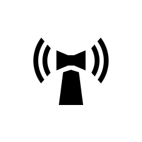 |
关停非法广播 | |
 |
找回重要人员 | |
 |
进行地质勘测 | |
| 传播民主 | ||
 |
紧急撤离 | |
 |
发射洲际弹道导弹 | |
| 检索有价值的数据 | ||
| 撤离高价值资产 |
终结族 Specific
任务 目标 that can only be completed on planets that are occupied by 终结族.
| Icon | Name | 难度 |
|---|---|---|
| 收集 Gloom-Infused Oil | ||
| 撤离 E-711 | ||
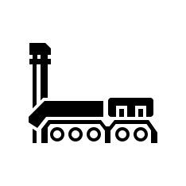 |
Conduct Mobile E-711 撤离 | |
| Activate TCS+ 车站 | ||
 |
恢复空气质量 | |
 |
重新开始 Pumps | |
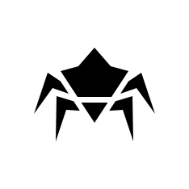 |
消灭虫族指挥官 | |
| 撤离 研究 Probe Data | ||
| 收集气象数据 | ||
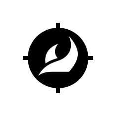 |
Blitz: Secure 研究 Site | |
| 收集 Gloom Spore Readings | ||
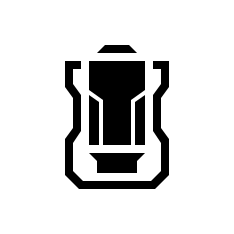 |
Deploy Dark Fluid | |
| Deactivate 终结族控制系统 | ||
| Activate Oil Pumps | ||
| Blitz 搜索与摧毁/终结族 | ||
| 歼灭 终结族 Swarm | ||
| Activate 终结族控制系统 | ||
 |
清除孵化点 | |
 |
消灭强袭虫 | |
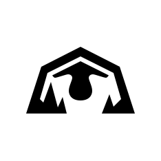 |
摧毁 Spore Lung | |
| Chart 终结族 Tunnels | ||
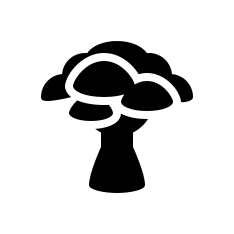 |
净化侵染区域 | |
| 设法采油 | ||
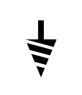 |
Nuke Nursery | |
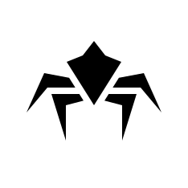 |
消灭吐酸泰坦 | |
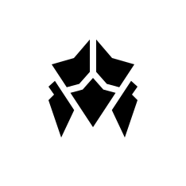 |
消除 穿刺虫 |
机器人 Specific
任务 目标 that can only be completed on planets occupied by 机器人.
| Icon | Name | 难度 |
|---|---|---|
| 占领工业联合体 | ||
| 破坏 Orgo-Plasma Synthesis | ||
| 突击兵: 撤离 Intel | ||
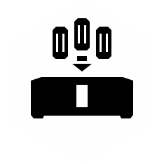 |
没收资产 | |
| 突击兵: 获取 证据 | ||
| 突击兵: Secure Black Box | ||
| Annex Untapped Mineral Sites | ||
 |
消除 Devastators | |
 |
破坏补给基地 | |
 |
摧毁传输网络 | |
| 歼灭 机器人 Forces | ||
 |
破坏航空基地 | |
 |
快速夺取 | |
| Blitz 搜索与摧毁/机器人 | ||
 |
消灭机器人巨型者 | |
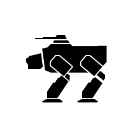 |
消除 机器人 移动工厂 | |
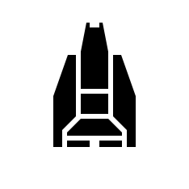 |
使生化人停产 | |
 |
Neutralize Ground-to-Orbit Defenses | |
| Blitz: 摧毁 Bio-Processors | ||
| 摧毁指挥碉堡 |
光能者 Specific
任务 目标 that can only be completed on planets occupied by the 光能者.
| Icon | Name | 难度 |
|---|---|---|
| Evacuate Colonists | ||
| 回收 Recon Craft Intel | ||
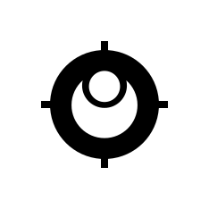 |
Blitz: 摧毁 光能者 Warp Ships | |
| 解放拓殖地 | ||
| 民主解放寂域 | ||
 |
击沉统御舰 | |
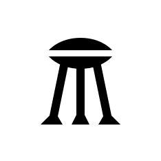 |
摧毁猎杀器 | |
| 摧毁异界尖塔 | ||
 |
击退入侵舰队 | |
| 歼灭 光能者 Forces | ||
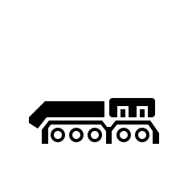 |
提取异常物质 | |
| File:压制 Toxic Pollination 任务 Icon.svg | Blitz: 压制 Toxic Pollination | |
 |
摧毁 Gazer Spire |
Tactical 目标
Tactical 目标 (also known as 可选目标) are 小型 目标 to 完成 within a 任务, with up to five 生成 on a map. Depending on the 难度 and 阵营, completing them can unlock in-任务奖励, or remove map 效果 or hazards.
Completing the Tactical 目标 will reward 绝地潜兵 with 申购点 和 50 经验值, with an exception for the "摧毁 High-Value 目标" 目标, which awards 222 经验值 and 否 申购点. This is before any 难度 multipliers are applied. Successful 撤离 is not 必需 to gain the reward at the end of the 任务, with the sole exception of 取回变异幼虫.
Aside from reactivating a 雷达站, here are some other methods to finding Tactical 目标.
- Attentive 绝地潜兵 can memorize the 位置 of all the hotzones shown during 任务 "简报" to narrow down 位置 of undiscovered Tactical 目标. Since these hotzones are not highlighted on the 任务 小地图, many of these 目标 can be identified with the topographical 素描 on the 小地图.
- During 武装配置 selection, the SEAF 大炮 is displayed as a 标准 issue 战略配备 if a SEAF 大炮 site has been placed on the 任务 map. If this 战略配备 is missing, then the map does not have a SEAF 大炮 site.
任务 Result
Missions count as successful if the 主要目标 was 完成; otherwise, they are treated as a failure which is possible if the 超级驱逐舰 leaves low orbit before the 主要目标 is completed. Not all five stars are available on every 难度.
First star is awarded for 主要目标 completion. Available from  简单 and onward.
简单 and onward.
- Its 不可能 outside of visual bugs due to faulty 互联网 连接 to 完成 the 任务 and 接收 否 stars at all.
Second star is awarded for completion of all optional 目标. Available from  容易 and onward.
容易 and onward.
- Your squad wont 接收 this star if you have completed all but one 可选目标.
Third star is awarded for partial 摧毁 of enemy 哨站/nests/encampments. Available from  中型 and onward.
中型 and onward.
- It is yet to be determined if counts 百分比 from total 哨站, or certain 类型 of 哨站, as third star 有时 gets rewarded while destroying 50% of 哨站 or more, 有时 it counts if 50% of all 哨站 类型 destroyed.
Fourth star is rewarded for 摧毁 of most of enemy 哨站/nests/encampments. Available from  困难 and onward.
困难 and onward.
Fifth star reward 条件 is currently 未知, possibly full clear of entire map. Available from  自杀任务 and onward.
自杀任务 and onward.
It is possible to get stars (outside of first one) out of order. For 示例, upon successful completion and clearing of  不可能 任务 except one 可选目标, you'll get four out of five stars and they will be displayed from left to right (stars your squad got are on the left, unmet star conditions on the right)
不可能 任务 except one 可选目标, you'll get four out of five stars and they will be displayed from left to right (stars your squad got are on the left, unmet star conditions on the right)
| % 必需 | Success Rating | Failure Rating |
|---|---|---|
| 100% | 无上英雄 | 不适用 |
| 80% | 优越 Valour | 惨痛失利 |
| 60% | 忠于使命 | 忠于使命 |
| 40% | Unremarkable Performance | |
| 20% | Disappointing 服务 | |
| 0% | 可耻行为 | 可耻行为 |
主要命令
主要命令 (abberviated as MO) are community-wide goals given all 绝地潜兵 for them to 完成. These 正面 the community for larger narrative plotlines, which will impact the 背景 and even the 银河地图 itself. There is 通常 only one 重要指令 active at a time, 有时 with some time in-between, though it is possible to have 多个 active at once.
All active 绝地潜兵 贡献 to the completion of the 重要指令, directly or indirectly. Depending on the planets and/or fronts being issued in the 重要指令, their participation may help or hinder its combat effectiveness.
Upon completion, 奖章 will be rewarded, though it is possible to be rewarded with other items, such as 战略配备 or 装饰 items. In order to be rewarded, 玩家 must be active within that time period, otherwise the reward will not be given to them.
Minor Orders / Strategic Opportunities / Strategic Threats
绝地潜兵 may also 接收 Minor Orders, Strategic Opportunities, and Strategic Threats during on-going 主要命令, typcially on a different 阵营 being the 目标. It's completion can reward surplus 战略配备 使用 instead of the usual 奖章, though it is possible for them to directly affect the 当前 MO by altering its win parameters.
Strategic Threats are instances of a major 效果 causing large-scale issues, affecting 绝地潜兵 galactic-wide. Due to their large 效果, resolving them is highly advised, as it could 已移除 various debuffs 相关 to them.
Failure to 完成 them 通常 does not directly cause any 负面 impacts, though the time lost attempting to 完成 them can be seen as such.
个人命令
All 绝地潜兵 daily are given optional 个人指令 （缩写为 PO) to 完成, which involves completing certain goals on a 行星. These may involve killing a number of 敌人 (in 基本信息 or with a certain weapon), collecting certain samples, or various 任务-相关 目标 (extracting, sub-目标, etc.). Depending on the PO, fellow 绝地潜兵 can 贡献, increasing its completion success rate.
个人指令 last 24 hours and rest at 9:00 AM UTC, with each 绝地潜兵 completes their 个人指令 individually. Upon completion, they are rewarded 15 奖章.